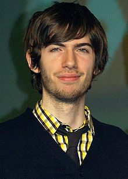

David Karp (born July 6, 1986) is an American web developer and entrepreneur.
He is the founder and CEO of the short-form blogging platform Tumblr.
According
to Forbes, Karp's net worth exceeds $200 million, and Tumblr has been valued at
$800 million.
Karp began his career as an intern under Fred Seibert at the animation company
Frederator Studios, where he built the studio's first blogging platform and
conceived, wrote, and edited their first internet video network, Channel
Frederator. Karp went on to work for online parenting forum UrbanBaby until it
was sold to CNET in 2006.
Karp then started his own software consulting company,
Davidville, where he worked with computer engineer Marco Arment on projects for
clients. During a gap between contracts in 2006, the two began work on a
microblogging website, which was launched as Tumblr in February 2007. As of
November 1, 2016, Tumblr hosts over 320.5 million blogs.
In August 2009, Karp
was named Best Young Tech Entrepreneur 2009 by BusinessWeek and in 2010, he was
named to the MIT Technology Review TR35 as one of the top 35 innovators in the
world under the age of 35.
On May 20, 2013, it was announced that Yahoo! and Tumblr had reached an
agreement for Yahoo! to acquire Tumblr for $1.1 billion. Karp remained CEO of
the company.
Born in New York City, Karp grew up on the Upper West Side of Manhattan. His
parents are Barbara Ackerman, a science teacher from San Anselmo, California,
and Michael D. Karp, a film and television composer. He has a younger brother
named Kevin. His parents separated when he was 17.
Karp attended the Calhoun
School from aged three through 8th grade, where his mother teaches science.At
11, he began learning HTML and was soon designing websites for businesses. Karp
went on to attend Bronx Science for one year before dropping out at the age of
15 and started homeschooling.
At the time, Karp had aspirations of getting into
a college in New York or MIT and saw homeschooling and doing other projects on
the side as a way to impress the colleges. Karp never returned to high school or
earned his high school diploma. Marco Arment, the first employee of Tumblr,
would later recall that Karp was keen to avoid letting his age shape people's
assumptions about him: "He wanted to keep it quiet for as long as he could
because he knew that as soon as it got out, every story about Tumblr would just
be about David's youth.
Karp began interning at age 14 for animation producer Fred Seibert, founder of
Frederator Studios. Karp's mother had taught Seibert's children at the Calhoun
School and was friends with his wife. Karp was fascinated with the work of
Frederator's computer engineers and his visits became regular.
After he started
homeschooling, Karp also began taking Japanese classes at the Japan Society and
saw a math tutor, with whom he worked on writing software for winning at
blackjack and poker. When entrepreneur John Maloney sought technical help with
UrbanBaby, an online parenting forum, a Frederator employee recommended Karp for
the job. Karp completed the project, which had to be done in a couple of days,
within four hours.
Maloney made him UrbanBaby's head of product and gave him a
small amount of equityAt age 17, while still working for UrbanBaby, Karp moved
alone to Tokyo for five months. It was a full three months after Karp had moved
to Tokyo that UrbanBaby found out he wasn't in New York.
Karp left UrbanBaby after it was sold to CNET in 2006.Using money from the sale
of his shares, Karp started his own software consultancy company, Davidville,
envisioning a mix of client work and his own products.
Marco Arment joined the
company as an engineer after replying to Karp's Craigslist ad.Karp had been
interested in tumblelogs for some time and was waiting for one of the
established blogging platforms to introduce their own tumblelogging platform. As
no one had done so after a year of waiting, Karp and Arment began working on
their own tumblelogging platform during a two-week gap between contracts in
2006.Tumblr was launched in February 2007 and within two weeks, the service had
gained 75,000 users.